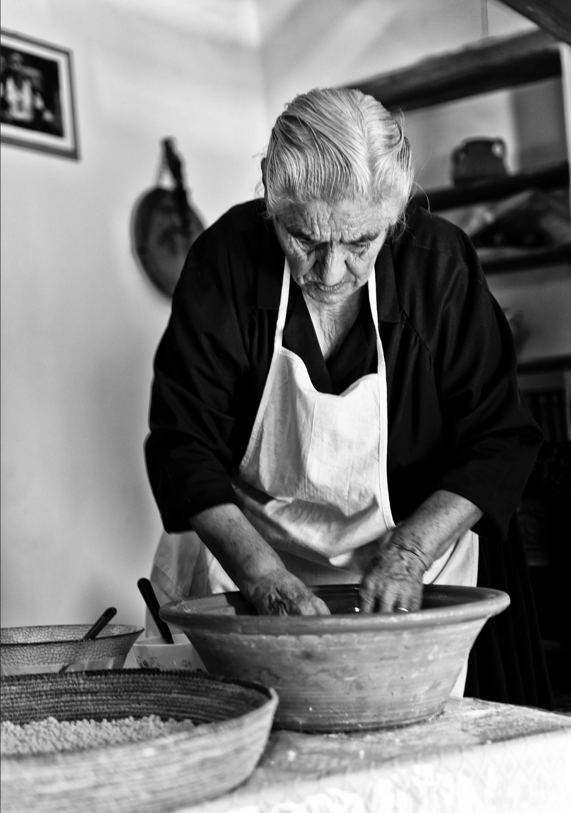

de gamle nonnas
hos affamato har vi taget udgangspunkt i de gamle værdier i italien. italianerne har stor tradition for, at mad skal nydes mange mennesker imellem ligesom en stor familie. håndværket bærer præg af de gamle nonna'er, hvor motto'et er: less is more. hvilket er noget vi tager stor stolthed i. vores retter skal kunne snakke for sig selv, råvarerne skal være gode og friske og man skal ikke føle man er sulten bagefter. maden skal være i centrum og skabe en stemning af at sidde sammen med sin familie og føle man er bragt tilbage til de gamle nonna'ers kogegryder.